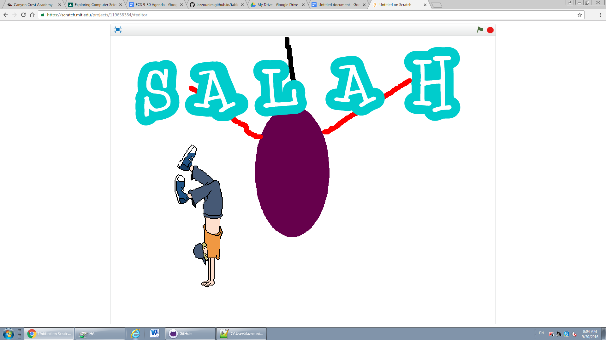
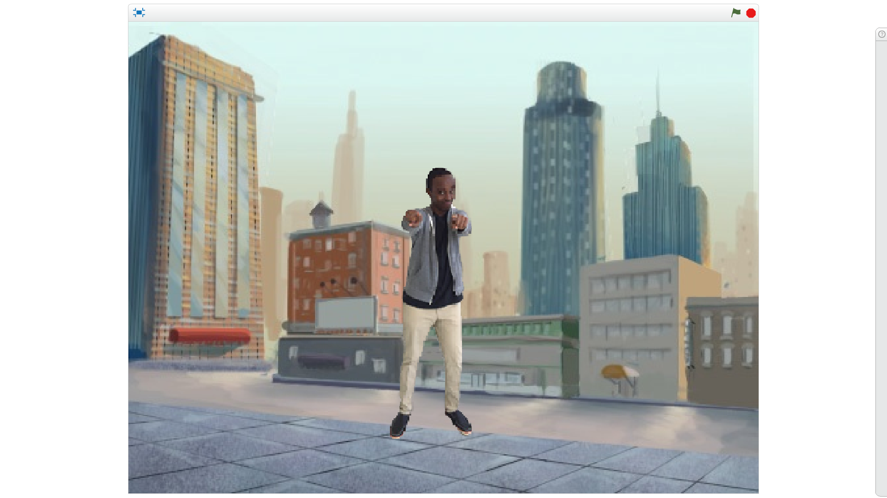

Scratch Content
Name Assignment
Description
Use scratch to design and create a program that shows my name. The requirements were to add a sprite for each letter in my name and give them 3 unique behaviors. The program needed to run when the green flag was clicked, and for extra credit I added a function to reset the scene to the beginning each time the green flag was clicked.
Concepts Learned
Using event blocks - green flag clicked, when key was pressed. Conditional statements - used if statements to…….. Used loops - I used a forever block to….. I used a repeat until block to……... Sprites - I learned how to choose a sprite from the library for each letter of my name Movement - I used the x and y values to make my sprites move to their original location when the green flag was clicked, I rotated the sprites to…...
Computer Buying Project
Used scratch to create a program for showing 4 different computer choices for one of our group’s family members. We chose 4 computers based off their needs, and created a powerpoint like program in scratch by clicking the right arrow button to move to the next backdrop.
Concepts learned
Switching backdrops - We learned how to switch backdrops to showcase different computer buying options. Conditional Statements - We used when ….. Is pressed to switch between different backdrops Sprites - We learned how to create sprites and use them as our computer models

Final Project
Description
Used Scratch to design and create a story program and show it to at least 10 people in the class.
Concepts Learned
Conversation - I learned how to make a really long conversation between 2 or three characters Switching characters - I also learned how to switch between different character models after every 1-3 sentences to keep the conversation between 2 different people Broadcast - I learned how to use the broadcast command to switch backdrops When - I learned how to do when statements for making characters speak only after the backdrop was switched.